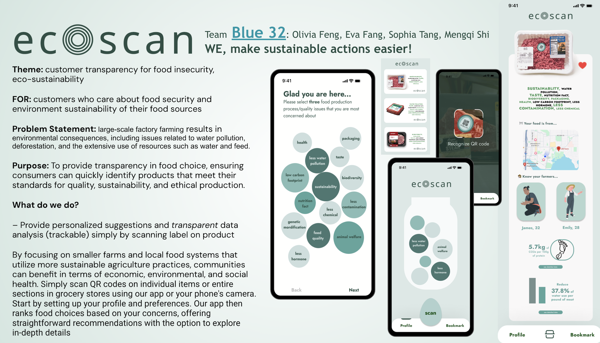
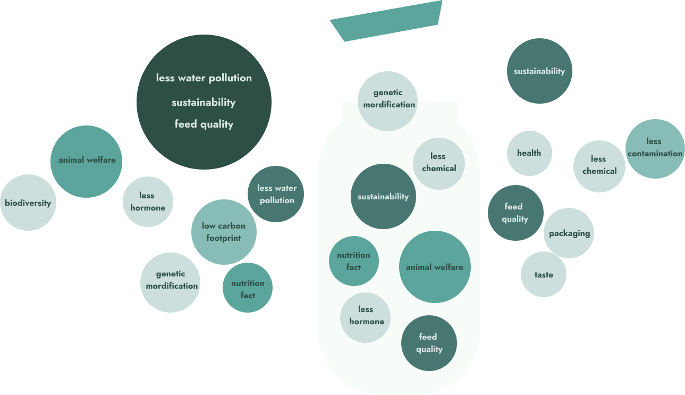
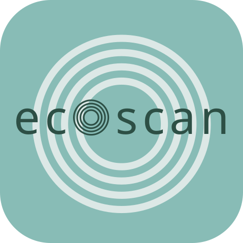
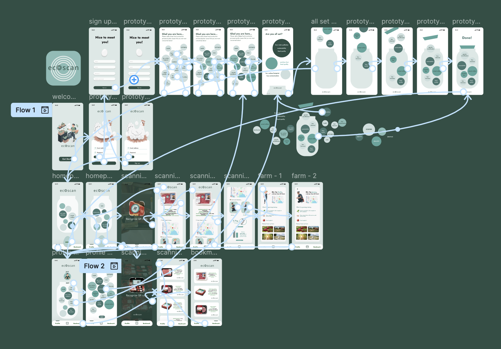
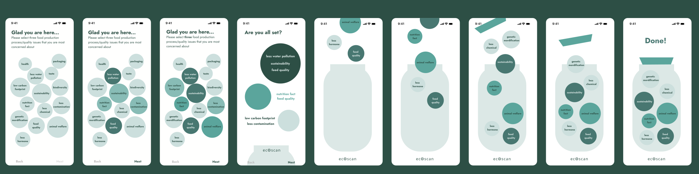

Role
Group Leader & UX Designer
Led scope alignment and co-designed the app flow, content hierarchy, and prototype screens.
Shoppers often care about sustainability, but vague food label claims make it hard to understand what a product actually supports.
Group Leader & UX Designer
Led scope alignment and co-designed the app flow, content hierarchy, and prototype screens.
Jan 2024
10-hour sprint from research framing to interactive prototype.
4 designers
Collaborative research, product framing, visual direction, and prototyping for UW WINFO Hackathon.

Many shoppers want to buy food that matches their values, but product packaging often relies on broad claims like “natural,” “eco-friendly,” or “cage-free” without giving people enough context to compare environmental impact, animal welfare, nutrition, or sourcing.
Project goal
Help grocery shoppers scan a product, understand label claims, and compare options based on their own sustainability priorities.
Mapped label ambiguity, sustainability claims, and shopper decision friction.
Translated the problem into preference bubbles, QR scanning, and product result hierarchy.
Assembled the mobile flow and pitch deck for the final hackathon presentation.

Instead of treating sustainability as a single score, we looked at the kinds of information people struggle to interpret at the point of purchase: organic standards, “natural” claims, water use, carbon footprint, chemical use, feed quality, local sourcing, and animal welfare.

Terms like “natural,” “organic,” and “cage-free” can sound reassuring while still leaving shoppers unclear about actual production conditions.
Packaging rarely makes environmental impact, sourcing, or welfare details easy to compare in the grocery aisle.
Nutrition and sustainability information can be technically accurate but still too dense for fast, confident decisions.
A useful tool should simplify information without pretending every shopper has the same priorities.
Rounded type, muted greens, and a concentric scan mark keep the product clear without making it feel clinical.
Aa Bb Cc Dd Ee Ff Gg Hh Ii Jj Kk Ll Mm
Nn Oo Pp Qq Rr Ss Tt Uu Vv Ww Xx Yy Zz
1 2 3 4 5 6 7 8 9 0 ! @ # $ % & ?
We chose a rounded sans serif direction to make the app feel clean and modern while still approachable for everyday grocery decisions.
Soft mint grounds the app; deeper teal carries emphasis.

The concentric mark connects scanning, layered information, and product comparison.
The flow connects what a shopper cares about with what they see after scanning a product. Personal priorities become the logic behind each result, rather than a separate onboarding exercise.

During onboarding, shoppers choose the sustainability concerns they care about and collect them into a simple visual profile. These selections become inputs for later recommendations, giving the scan result a clear personal rationale.
Design focus: make abstract concerns feel approachable, selectable, and easy to revise.

A QR scan opens a product summary that prioritizes matches with the shopper's profile. Impact metrics, local sourcing, and farmer context appear as progressive layers, keeping the first answer fast without removing supporting evidence.
Design focus: surface relevance first, then let shoppers inspect the data behind it.

Given the 10-hour timeline, the value of EcoScan is in the product framing: using scan-based interaction to reduce label confusion, personalize sustainability information, and make food impact easier to understand at the point of purchase.
EcoScan aims to transform how consumers interact with food labels by promoting transparency and sustainability. It empowers shoppers to make informed decisions while encouraging ethical, environmentally responsible food production.
I would test whether shoppers understand the preference bubbles, trust the scan result rationale, and feel helped rather than judged by the recommendation language.